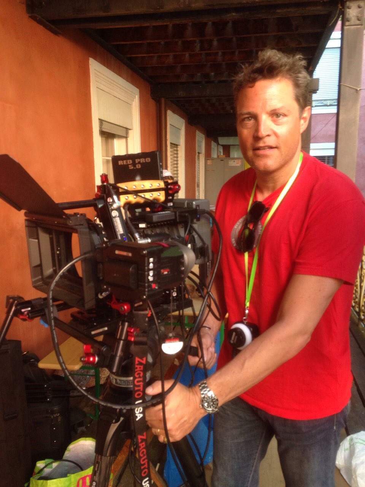

Mediamax Productions
L'atelier d'effets visuels et de films d'Olivier G. Burri. Compositing, étalonnage et restauration, du court-métrage à l'image d'archive.
20 ansde films, depuis Silence (2005)
30+vidéos publiées
55 000+vues cumulées
2chaînes YouTube
Travaux choisis
Tests de matériel et tutoriels : sur la chaîne Mediamax.
L'atelier VFX
Mediamax prend un film du tournage à l'image finale. Trois savoir-faire, réunis dans un même atelier :
Compositing et effets visuels
Intégration 3D sous Blender, tracking, nettoyage et remplacement d'éléments dans Fusion.
Étalonnage et restauration
Look, raccords et remise en état d'images anciennes, comme Silence, restauré pour ses 20 ans.
Prises de vue aériennes
Drones DJI, de la préparation du vol à l'image étalonnée.
Caméras : RED, Blackmagic 6K et URSA 12K. Logiciels : DaVinci Resolve, Fusion, Blender.

Olivier G. Burri
Raconter avec la technique, pas pour elle.
Je réalise des films depuis plus de vingt ans, de Silence (2005, restauré en 2025) à Hybris et Fichtl's Lied. Avec Mediamax, j'ajoute les effets visuels et l'étalonnage à mes propres tournages. J'aime pousser les outils dans leurs retranchements : RED, rigs Blackmagic, Tilta, drones DJI, tracking de surface dans Resolve. Et je partage ce que j'apprends en chemin.
Travaillons ensemble
Un film, des effets visuels, une prise de vue aérienne ? Écrivez à Mediamax.
Sur YouTube : Mediamax et Olivier G. Burri